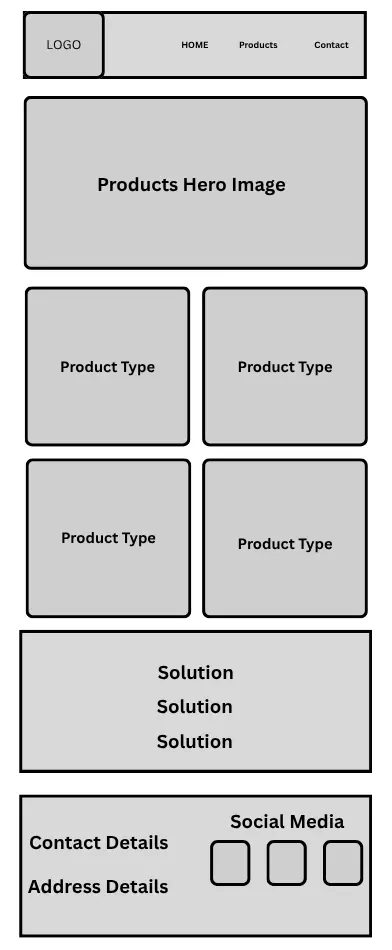
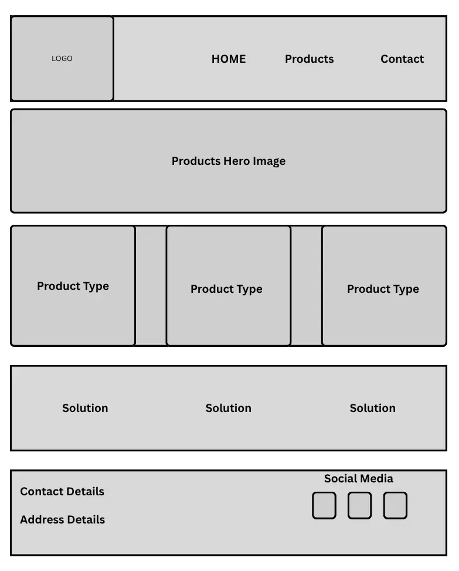

Site Name:
MultiCo Solutions
The name was chosen as it represents the company's focus on providing comprehensive solutions for two-way radio communication.
Site Purpose:
The site will provide a hub for 2-Way radios and related services that are offered by MultiCo Solutions, including product information, support resources, and contact details for customers.
Scenarios:
- A customer looking for information on a specific 2-Way radio model.
- A customer needing technical support for their 2-Way radio.
- A potential customer exploring the range of products and services offered by MultiCo Solutions.
Color Schema:
The color scheme will consist of a professional palette with shades of blue and gray, complemented by white for a clean and modern look. This will represent trust and security in the products and services we offer.
Typography:
The font choice will be a clean, modern sans-serif typeface for headings and body text, ensuring readability and a professional appearance.
Wireframes:
Home Small Wireframe

Home Large Wireframe

List of Website Pages
- Page 1: Home - A brief introduction showing different radio options with images
- Page 2: Products - Show different radio types with technical details or specifications
- Page 3: Contact - Have contact information, support details and basic guidlines.